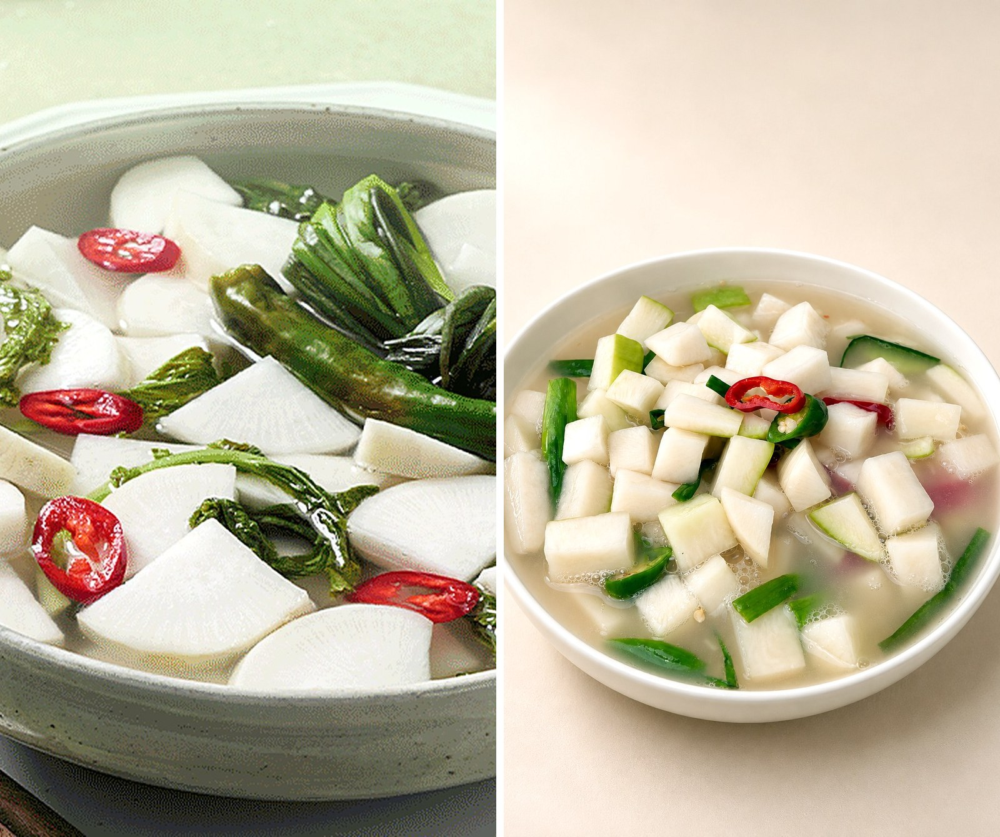
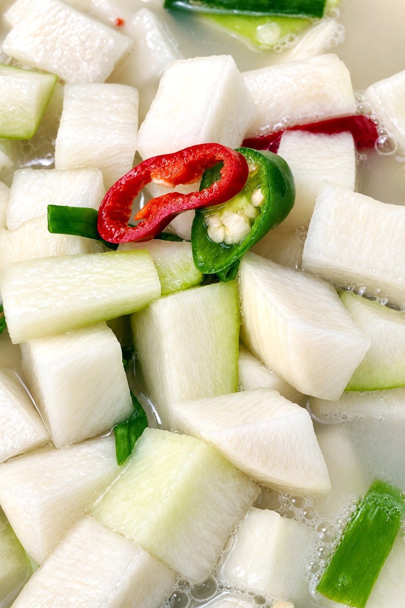

김치 사전 · 같은 무, 다른 김치

그리운밥상 동치미 · 깍두기
그리운밥상 동치미 · 깍두기 연출 이미지
연출 이미지동치미는 무를 통째로 맑은 소금물에 담가 국물째 먹는 물김치, 깍두기는 무를 깍둑 썰어 양념에 버무리는 김치예요. 무 고르기부터 익히는 방식까지 하나하나 달라요.
 연출 이미지
연출 이미지동치미는 통째로 오래 담가도 무르지 않는 작고 단단한 무가 좋아요. 그리운밥상은 11~2월엔 제주 다발무를 써요. 깍두기는 썰어 쓰니 크고 물이 많은 일반 무로도 충분해요.
 연출 이미지
연출 이미지무는 추위를 좋아하는 채소예요. 날이 차가우면 천천히 자라 속이 치밀하고 단단해지고, 추위를 견디려 양분을 모아 단맛이 올라요. 그래서 김장철 무가 가장 맛있어요.
 그리운밥상 무 절이기
그리운밥상 무 절이기동치미는 통무를 하루 절인 뒤 소금물에 담가 168시간 천천히 익혀요. 깍두기는 썬 무를 절여 양념에 버무리면 며칠 만에 맛이 들어요.
 그리운밥상 동치미 · 연출 이미지
그리운밥상 동치미 · 연출 이미지동치미는 무와 배·갓·파의 맛이 국물로 우러나고, 그 국물이 다시 무에 스며들어요. 깍두기는 양념이 썬 면에 직접 배어 한입에 진한 맛이 나요.
 그리운밥상 동치미 · 연출 이미지
그리운밥상 동치미 · 연출 이미지깍두기는 깍둑 썬 큰 무를 양념에 버무려 며칠 만에 익혀, 진하게 한입에 먹어요.

그리운밥상 깍두기무를 네모나게 써는 모양을 뜻하는 ‘깍둑깍둑’에서 이름이 왔어요. 정조의 딸 숙선옹주가 처음 만들었다는 이야기도 전해지지만, 1940년 책에 실린 일화라 정확하지는 않아요.
 그리운밥상 동치미 · 백열무김치
그리운밥상 동치미 · 백열무김치